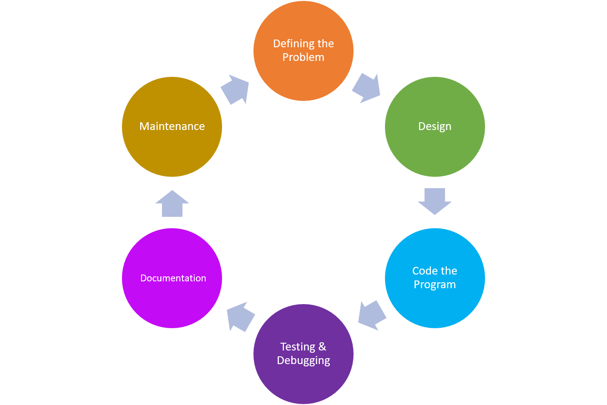

- Define the Problem
- This step involves gathering the requiremnts of the program needed to solve the problem.
- Questions that should be answered.
- What data do we need to process?
- How should we process the data?
- What output should the program deliver?
- How should the user
-
Design the Program
- Programs design focuses on breaking down the program into smaller, more manageable componets. Various tools are used to help design a program.
- Commonly used tools:
- Structure Charts
- Algorithm
- Flow Charts
- Decision Tsbles
- Pseduocode
-
Code the Program
- Once the program has been designed, a developer then writes the code.
- Coding often involves translating the design from charts and pseduocode into a specific programming language. Ususally the language is chosen during the "defining" stage.
-
Testing and Debugging
- After code has been written this stage revolves around fixing any bugs in the program.
- There are two kinds of errors that cause bugs:
- Syntac Errors: There are like grammatical mistakes in the code
- Logical Error: There mistakes might cuase an other than intended output but the code still works.
- The progammer must fix these mistakes by carefully examining the already written code for errors.
-
Documentation
- After coding has been completed, the progammer must write a manual that generally contains the following:
- An overview of the program fuctionality.
- In-depth explanation of program features.
- Documentation of all commands
- A thorough descripition of error messages generated by the program.
-
Deploying and Maintaining the Program
- A softwate team will be responsible for fixing new errors and updating the software with new features.
- When a new feature should be assed to the program, the cycle restarts as developers begin to define what problem the new feature will solve.